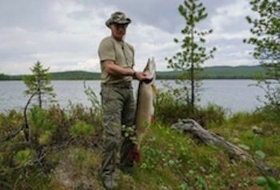

U.S. PR Firm Helps Putin
WASHINGTON — In April 2011, then-Prime Minister Vladimir Putin was asked an unusually flattering question by an American journalist: "Are you the coolest man in politics?"
The interview, which ran on the website of Outdoor Life magazine, was set up by Ketchum, the U.S. public-relations firm that has worked to burnish Russia's image since 2006.
Last week, Ketchum scored another public-relations coup: It helped place a Putin commentary in the opinion pages of The New York Times, just as representatives from Russia and the U.S. were beginning to meet in Geneva to negotiate a plan for Syria to give up its chemical weapons.
The article made quite a splash in Washington. Putin painted himself as a peacemaker and lectured the U.S. for what he said was a tendency to use "brute force" in world disputes. U.S. House Speaker John Boehner said he was "insulted" by the article, while the White House noted that Putin was taking advantage of press freedoms unavailable in Russia.
Ketchum, a division of the Omnicom Group, has earned more than $25 million working for Russia, according to documents filed with the U.S. Department of Justice. It also has been paid more than $26 million since 2007 to promote Gazprom, Russia's state-owned gas company.
In 2007, Ketchum successfully lobbied Time magazine to name Putin its "Person of the Year," according to U.S. Justice Department lobbying disclosure filings that show repeated meetings between Ketchum representatives and Time staffers.
"He expanded his outsize — if not always benign — influence on global affairs," Time wrote of Putin.
Meanwhile, Ketchum staffers urged the State Department to soften its assessment of Russia's human rights record that year, according to lobbying records. The company has also reached out to reporters who have written articles chronicling Russian human rights abuses.
Russia's efforts to boost its image in U.S. media outlets have come as the country has cracked down on human rights at home.